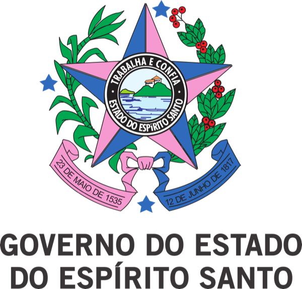
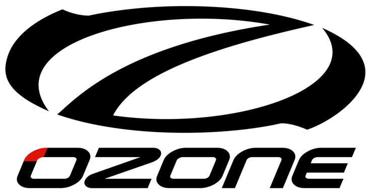

Travessia épica
Aproximadamente 600 km cruzando montanhas, vales e passando por 16 cidades do Espírito Santo.
A maior competição de Hike and Fly das Américas. Inspirada no Red Bull X‑Alps, cruzando as montanhas do Espírito Santo do interior ao litoral.
A Transcapixaba H&F é a travessia do estado do Espírito Santo caminhando e voando. Os atletas devem percorrer uma rota pré-definida, com Turnpoints que podem ser no formato de raio ou placa. É uma corrida por terra e ar e ganha o atleta que cruzar a linha de chegada primeiro, tendo passado por todos os Turnpoints.
Aproximadamente 600 km cruzando montanhas, vales e passando por 16 cidades do Espírito Santo.
Cada atleta deve estar acompanhado por uma equipe de suporte com no mínimo uma pessoa em um carro.
Desde a primeira edição, a Transcapixaba se tornou internacional e recebe atletas de todo o mundo.
Foi a primeira competição de travessia realizada no Brasil, inspirada na maior competição do mundo.
Em 16 a 20 de julho de 2025, 22 atletas cruzaram 125,8 km de Venda Nova do Imigrante até a Ponte de Itapaboana.
De Vila Pereira (Nanuque/MG) a Bom Jesus do Itabapoana (RJ), cruzando o Espírito Santo. Doze turnpoints. Doze dias de janela.
Mapa interativo · Clique em um marcador ou cilindro para detalhes. Ver página completa da rota →


